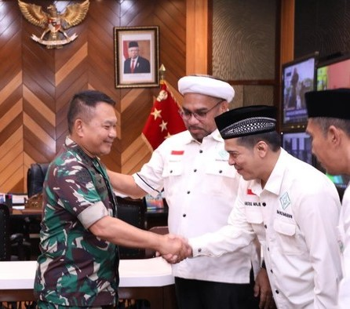

|
Minggu, 20 Maret 2022 05:53 WIB  Jakarta - Kepala Staf TNI Angkatan Darat (KSAD) Jenderal Dudung Abdurachman ditunjuk menjadi Ketua Dewan Pembina Badan Koordinasi Mubaligh Se-Indonesia (Bakomubin). Ali Mochtar Ngabalin juga kembali terpilih sebagai Ketum untuk periode 2022-2027. Penunjukan Jenderal Dudung itu berdasarkan hasil Musyawarah Nasional III yang berlangsung pada 27 Februari 2022 di Hotel Aryaduta, Jakarta Pusat. Dudung ditunjuk karena dinilai religius dan memiliki semangat toleransi yang tinggi. "Kang Haji Dudung santri alumni Pesantren Buntet, Cirebon. Beliau juga mubalig, jadi kami minta beliau turut memperkuat Bakomubin," ujar Ngabalin kepada wartawan, Sabtu (19/3/2022). Selain itu, Ngabalin juga menilai Dudung sebagai sosok yang tegas. Namun, menurut Ngabalin banyak masyarakat yang belum mengetahui sisi religius Dudung. "Saat jadi Komandan Kodim di Sumatera Selatan, beliau sering ceramah agama ke pelosok-pelosok kampung. Ketika jadi Pangdam Jaya, beliau rajin bersilaturahmi keliling ke sejumlah masjid," kata Ngabalin. Dudung menyatakan kesediaannya dipilih sebagai Ketua Dewan Pembina Bakomubin. Dia berharap Bakomubin bisa menyebarkan semangat moderasi beragama ke seluruh Indonesia. "Apalagi organisasi ini tempat berkumpulnya para mubalig yang berdakwah menyampaikan pesan agama dengan cara baik," ucap Dudung. |